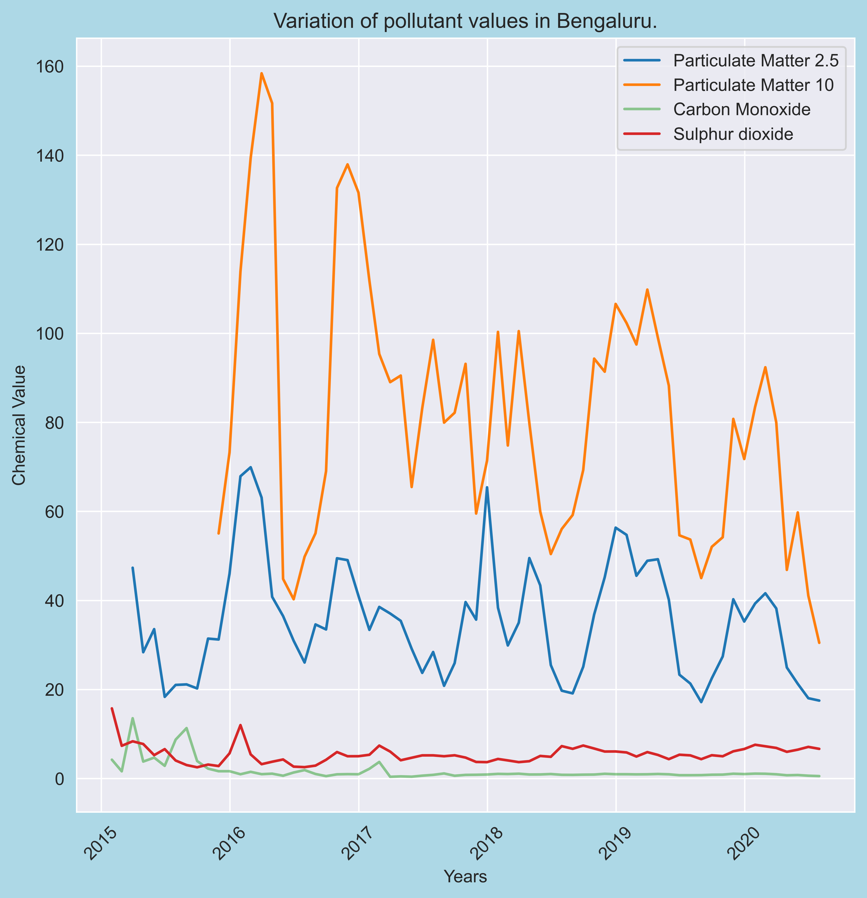
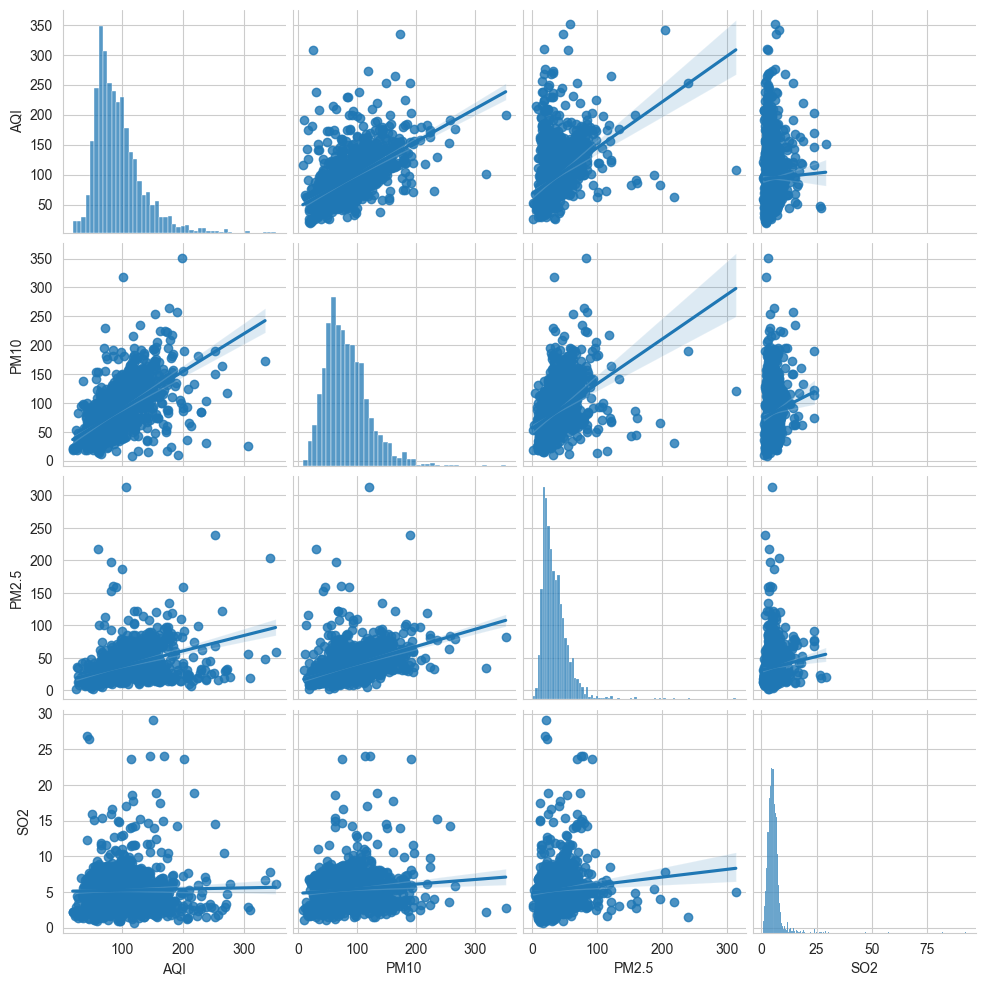
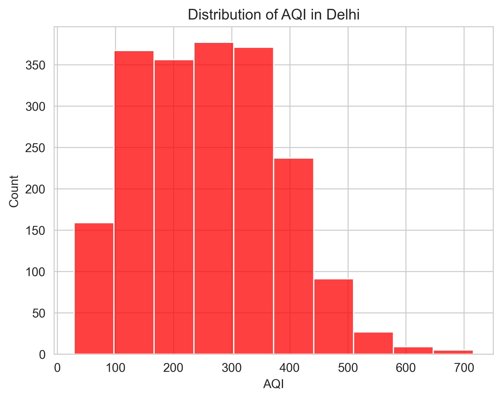

The Air Quality Index (AQI) is a standardized measure used to
communicate the level of air pollution in a particular location, helping
people understand how polluted the air is and what potential health
effects might arise. The AQI considers the concentrations of various
pollutants in the air, such as particulate matter (PM2.5 and PM10),
nitrogen oxides (NO, NOx, and NO2), ammonia (NH3), carbon monoxide (CO),
sulfur dioxide (SO2), ozone (O3), and volatile organic compounds like
benzene, toluene, and xylene. Each pollutant's concentration is scaled
and translated into an index score ranging from 0 to 500, with higher
values indicating poorer air quality.
The AQI calculation involves converting pollutant concentrations into
individual sub-indices, which reflect the health effects of that
pollutant. The highest of these sub-indices becomes the overall AQI
value for a location, categorizing air quality into buckets, such as
“Good,” “Moderate,” “Poor,” “Very Poor,” and “Severe.” This
categorization enables residents to quickly gauge air quality and assess
any associated health risks.
Air quality in India has been deteriorating significantly over the
years. In this exploratory data analysis (EDA), I utilized a historical
dataset sourced from Kaggle, which contains over 700,000 hourly
pollutant readings for major cities across India, including Delhi,
Bengaluru, Ahmedabad, Chennai, and Kolkata. This EDA focuses on three
main areas: overall analysis of air quality across India, a case study
on Bengaluru, and a case study on Delhi. Through various visualizations,
I examined the variation of key pollutants from 2015 to 2020, as well as
the relationships between major pollutants that negatively impact air
quality.
To streamline the analysis and improve visualization clarity, I
converted the original dataset into daily and monthly datasets,
containing approximately 29,000 and 4,200 entries, respectively. This
aggregation simplified the plotting process and helped reduce missing
values, which were imputed with appropriate mean or mode values for each
column. Analyzing the complete dataset with 700,000 entries would have
been resource-intensive and less practical, making this conversion an
essential step for more efficient and insightful EDA.
Overall Air Quality Analysis for India
In this section, I’ve included four visualizations to analyze air
quality across major cities in India:
Median AQI Bar Graph: This bar chart illustrates the
median AQI values across key cities, helping to compare overall air
quality levels.
Pollutant Correlation Heatmap: The heatmap shows the
correlation between different pollutants, providing insights into how
these pollutants may influence each other.
PM2.5 Variation Line Plot: This line plot captures
the variations in PM2.5 levels over time for a selection of cities,
highlighting trends in one of the primary pollutants.
Subplots for AQI, PM2.5, and PM10 Relationships:
These scatter plots examine the relationships among AQI, PM2.5, and
PM10 levels, offering a deeper view into how these pollutants interact
and affect air quality across India.
Median AQI For Major Indian Cities.
This plot illustrates the median AQI index for the cities of Delhi,
Mumbai, Bengaluru, Lucknow, Hyderabad, Chennai, Patna, Gurugram,
Visakhapatnam, and Amritsar. The choice of median over mean is
intentional; the dataset contains several outliers that can skew the
mean significantly. Thus, using the median provides a more accurate
representation of the central tendency in this context.
Analysis: From the graph, it is evident that Delhi has
the highest median AQI among the cities over the years. Additionally,
cities such as Patna, Gurugram, and Lucknow also exhibit median AQI
values above 200, indicating poor air quality. In contrast, the
remaining cities have median AQI values that hover around 100,
suggesting relatively better air quality.
Correlation Heatmap for the Pollutants.
This plot is based on a correlation matrix visualized using a Seaborn
heatmap. To enhance clarity, I employed a NumPy mask to hide the values
in the upper triangle of the matrix. In the heatmap, a deeper red color
indicates a strong correlation between pollutants, while a deeper blue
signifies a weaker correlation.
Analysis: From the heatmap, we observe that PM2.5 and
PM10 exhibit the highest positive correlation of 0.85, which is expected
since both are particulate matter. Additionally, the AQI shows a strong
correlation with PM10 (0.80), PM2.5 (0.66), CO (0.68), and NO2 (0.54).
This suggests that AQI is significantly influenced by these pollutants;
thus, when their concentrations are elevated in a city, the AQI for that
location is likely to be high.
Variation of PM2.5 Levels Over the Years
This subplot consists of line plots depicting the variation of PM2.5
levels over the years for the cities of Bengaluru, Delhi, Hyderabad, and
Lucknow. These cities were selected due to the absence of consistent
PM2.5 data for other major cities (e.g., Mumbai, Chennai), where
readings either began later or were not recorded at all. Filling in
missing values with the median would have resulted in a flat line plot.
Analysis: From the plots, it is evident that Delhi
records PM2.5 levels around 300 µg/m³, followed by Lucknow at
approximately 250 µg/m³. Bengaluru shows lower levels at around 70
µg/m³, while Hyderabad's PM2.5 levels are approximately 120 µg/m³.
Notably, the graphs indicate a dip in PM2.5 levels during the mid-year
months of June, July, and August, which can be attributed to the monsoon
and rainy seasons. Rain acts as a cleansing agent in the atmosphere,
significantly reducing pollutant levels.
Relationship Between PM2.5, PM10, and AQI
I have utilized Seaborn scatterplots to create three subplots that
illustrate the relationship between PM2.5, PM10, and AQI across major
cities in India.
Analysis: From the graphs, it is evident that AQI has a
high positive correlation with PM10 compared to PM2.5. Additionally,
PM2.5 also shares a positive correlation with PM10, as both are types of
particulate matter. This relationship is further demonstrated by the
positive correlation observed between PM2.5 and PM10 in the third plot.
Case Study On Bengaluru
Bengaluru, often referred to as the "Silicon Valley of India," is a
vibrant metropolis known for its booming technology industry and rich
cultural heritage. Nestled in the southern part of India, it is one of
the largest cities in the country and serves as a major hub for
information technology, aerospace, and biotechnology. The city's
elevation at approximately 3,000 feet above sea level contributes to its
moderate climate, characterized by mild summers and cooler winters. With
its lush green parks and gardens, Bengaluru is often celebrated for its
pleasant weather, making it a popular destination for both residents and
tourists alike.
However, the rapid urbanization and population growth in Bengaluru have
led to significant challenges, particularly concerning air quality. The
city's air quality has been a growing concern, with increasing levels of
pollutants such as Particulate Matter (PM2.5), Particulate Matter
(PM10), Carbon Monoxide (CO), and Sulphur Dioxide (SO2). These
pollutants can have detrimental effects on public health and the
environment. Weather patterns, including seasonal changes, also play a
crucial role in air quality fluctuations, with monsoon rains often
helping to temporarily alleviate pollution levels. Nonetheless, the
overall air quality in Bengaluru requires ongoing monitoring and
effective management strategies to ensure a healthier living environment
for its residents.
For Bengaluru, I have plotted five visualizations:
Variation Plot: Variation of Particulate Matter
(PM2.5), Particulate Matter (PM10), Carbon Monoxide (CO), and Sulphur
Dioxide (SO2) over the years.
Violin Plot: Violin plot for pollutants in Bengaluru.
Histogram: Histogram for the Distribution of Air
Quality Index (AQI) severity buckets.
Scatter Plot: Scatter plot for the relationship
between PM2.5 and PM10 with AQI bucket as hue.
Pair Plot: Pair plot for AQI, PM2.5, PM10, and SO2 to
understand the relationships.
Variation of PM2.5, PM10, CO and SO2

I have plotted line plots to observe the variation of pollutants:
Particulate Matter (PM2.5), Particulate Matter (PM10), Carbon Monoxide
(CO), and Sulphur Dioxide (SO2) over the years.
Analysis: From the graph, we can see that pollutant
levels were significantly higher in 2016 and 2017 compared to 2018,
2019, and 2020. The notable drop in pollutant levels in the subsequent
years can be attributed to various factors, including policy changes
aimed at reducing emissions and the increased awareness of air quality
issues. Additionally, the relationship between PM2.5 and PM10 is
evident, as both are types of particulate matter that often exhibit
similar trends in concentration.
Violin Plot for Pollutants and AQI
I have plotted a violin plot for the recorded pollutant values in
Bengaluru on a daily basis. Note that I have excluded the pollutant
Xylene from the analysis, as there were no observations recorded for it
in Bengaluru. This plot provides a comprehensive visualization of the
distribution, quartiles, and central tendencies for each pollutant.
Analysis: From the plot, we can see that the violin
plots for PM10 and AQI are almost similar, indicating a high correlation
between them. The Kernel Density Estimate (KDE) graph is prominently
centered around the range of 75 to 100 for the AQI violin plot,
suggesting that a significant portion of the data falls within this
range. Additionally, we can observe a substantial amount of Nitrogen
Oxides (NOx) present in the air, which is likely attributable to the
high volume of vehicles in Bengaluru.
Histogram for AQI Buckets Distribution
I have plotted a histogram that counts how many instances fall into each
category within the dataset. Additionally, I have included a Kernel
Density Estimate (KDE) curve to provide a smoothed representation of
this distribution.
Analysis: The histogram reveals that the majority of
AQI instances for Bengaluru fall within the "Satisfactory" and
"Moderate" categories, with a noticeable portion also categorized as
"Good." While there are only a few instances in the "Poor" category, it
is reassuring to see minimal counts in the "Severe" and "Very Poor"
categories. However, this should not be a reason for complacency, as
continued efforts are necessary to maintain and improve air quality.
Relationship between PM10 and PM2.5 for different Buckets
I have plotted a scatterplot illustrating the relationship between PM2.5
and PM10, using the AQI bucket as the hue.
Analysis: As expected, there is a positive correlation
between PM2.5 and PM10, indicating that higher levels of one pollutant
are associated with higher levels of the other. The majority of the data
points fall within the "Moderate" and "Satisfactory" AQI buckets, which
aligns with our observations from the previous plot.
Pairplot for AQI, PM10, PM2.5 and SO2

I have plotted a pairplot for the columns AQI, PM10, PM2.5, and Sulphur
Dioxide (SO2).
Analysis: As observed in the previous plots, PM2.5,
PM10, and AQI all exhibit positive correlations with one another.
However, SO2 does not show significant correlation with AQI, PM2.5, or
PM10, indicating that the levels of Sulphur Dioxide may not be as
closely linked to overall air quality as the particulate matters.
Overall Summary for Bengaluru Case Study Plots
In the Bengaluru case study, five visualizations were created to
comprehensively analyze air quality metrics. The Variation of
Particulate Matter (PM2.5), Particulate Matter (PM10), Carbon Monoxide
(CO), and Sulphur Dioxide (SO2) over the years shows fluctuations in
pollutant levels, revealing elevated concentrations in 2016 and 2017
compared to subsequent years. The analysis underscores a consistent
relationship between PM2.5 and PM10 due to their shared particulate
nature.
The Violin Plot visualizes daily pollutant distributions, indicating
that PM10 and AQI are closely related, with a significant presence of
nitrogen oxides likely attributable to heavy vehicular traffic.
Meanwhile, the Histogram for AQI Severity Distribution demonstrates that
most instances fall within satisfactory and moderate categories, with
minimal counts in the severe and very poor ranges, highlighting a
generally positive air quality scenario despite some concerns.
The Scatter Plot, which examines the relationship between PM2.5 and PM10
using AQI buckets as hue, reinforces the positive correlation between
these pollutants, predominantly falling into moderate and satisfactory
categories. Lastly, the Pair Plot illustrates the interrelationships
among AQI, PM10, PM2.5, and SO2, confirming strong positive correlations
among the first three, while SO2 displays a weaker association,
suggesting that it may not significantly influence overall air quality
in Bengaluru.
Case Study On Delhi
Delhi, the capital city of India, is a vibrant metropolis known for its
rich history, diverse culture, and modern infrastructure. It is home to
numerous historical landmarks, bustling markets, and a rapidly growing
population that contributes to its status as one of the largest urban
centers in the country. The city is a political, economic, and cultural
hub, attracting people from all walks of life. However, this urban
sprawl also presents significant challenges, particularly in terms of
environmental sustainability and public health.
Air quality in Delhi has raised considerable concerns over the years, as
the city often experiences severe pollution levels, especially during
the winter months. Factors contributing to this air quality crisis
include vehicular emissions, industrial discharges, construction dust,
and the burning of biomass in surrounding areas. As a result, Delhi
frequently records high levels of Particulate Matter (PM2.5 and PM10),
leading to adverse health effects on its residents. The situation calls
for urgent action to address the sources of pollution and implement
effective air quality management strategies to safeguard public health
and the environment.
Similar to Bengaluru, I have plotted five visualizations on Delhi:
Line Plot to show variations of PM10, PM2.5, CO, and
SO2 levels in Delhi over the years.
Pie Chart that shows the distribution of AQI buckets
in Delhi.
Line Plot to observe the variation of Oxides of
Nitrogen in Delhi from March 2020 to April 2020.
Histogram to see the distribution of AQI in Delhi.
Joint Plot between PM2.5 and PM10 with AQI bucket as
hue.
Variation of PM2.5, PM10, CO and SO2
I have plotted the variations in the levels of PM10, PM2.5, Carbon
Monoxide (CO), and Sulphur Dioxide (SO2) over the years.
Analysis: The levels of PM2.5 and PM10 exhibit similar
rising and falling patterns throughout the years. As observed in
Bengaluru, during the middle of the year, pollutant levels decrease
significantly due to the rains and monsoons, which act as natural
cleansers. Additionally, people tend to use their vehicles less during
this time, contributing to lower pollutant levels.
Pie Chart For Distribution Of AQI Buckets
The pie chart is plotted to show the distribution of Air Quality Index
(AQI) buckets in Delhi.
Analysis: Over the years, we observe that approximately
75% of the chart is covered by the "Very Poor" (26.9%), "Poor" (26%),
and "Moderate" (25.6%) categories, which is a concerning trend.
Furthermore, around 12% of the data falls into the "Severe" bucket,
indicating significant health risks for the population. Alarmingly, only
about 10% of the chart represents the "Good" and "Satisfactory"
categories, highlighting a pressing need for effective air quality
management. This distribution raises serious concerns about the ongoing
air pollution crisis in Delhi, as sustained exposure to poor air quality
can lead to severe health issues for its residents.
Variation of Oxides of Nitrogen in March 2020
I have plotted the line plot to analyze the variation in the Air Quality
Index (AQI) and oxides of nitrogen (NOx) during March 2020.
Analysis: On March 21st, the AQI was around 200,
indicating a significant level of pollution. However, after the lockdown
was imposed on the same day, the AQI significantly dropped to around 50.
This change highlights the immediate impact of reduced vehicular
emissions due to the lockdown. Similarly, the levels of oxides of
nitrogen also fell, reflecting the decrease in traffic as people were
restricted from using their vehicles. This data underscores the
potential for improving air quality through reduced pollution
activities.
Distribution of AQI in Delhi

I have plotted a histogram to show the distribution of Air Quality Index
(AQI) values in Delhi.
Analysis: Although the AQI can reach a maximum of 500,
values above that indicate outliers present in the dataset. The
histogram reveals that a significant proportion of AQI values in Delhi
fall within the categories of 200, 300, and 350. This distribution is
concerning as it reflects a persistent level of air pollution that poses
serious health risks to the population. The high frequency of AQI values
in these categories suggests that many residents are consistently
exposed to unhealthy air quality, which can lead to long-term health
complications, especially for vulnerable groups such as children and the
elderly.
Joint plot for PM10 and PM2.5
I have created a joint plot that illustrates the relationship between
PM10 and PM2.5, along with a Kernel Density Estimate (KDE) plot, using
AQI buckets as hue.
Analysis: The joint plot reveals that the majority of
points fall within the Severe, Poor, Very Poor, and Moderate categories.
This is a significant concern as it indicates that a large portion of
the population is exposed to unhealthy air quality levels. In contrast
to Bengaluru, where the majority of points were categorized as Moderate
and Satisfactory, Delhi's air quality situation appears more dire. The
KDE plots further emphasize this discrepancy, highlighting the need for
immediate action to address the high levels of air pollution affecting
the city.
Summary of Delhi’s Air Quality Analysis
The five visualizations presented provide a comprehensive overview of
the air quality situation in Delhi, emphasizing the critical pollutants
and their variations over time. The line plot illustrating the
fluctuations of PM10, PM2.5, Carbon Monoxide (CO), and Sulphur Dioxide
(SO2) levels from 2016 to 2020 reveals similar trends for PM2.5 and
PM10, with significant drops observed during the monsoon months,
indicating the natural cleansing effects of rainfall on air quality.
The pie chart depicting the distribution of Air Quality Index (AQI)
buckets raises alarm bells, as approximately 75% of the observations
fall into the Very Poor, Poor, and Moderate categories. This concerning
distribution highlights the persistent air quality challenges faced by
the city, with around 12% categorized as Severe, and only a minimal
share representing Good and Satisfactory levels. Such a distribution
underscores the urgent need for effective air quality management
strategies to address the ongoing pollution crisis.
The line plot focused on the variation of AQI and oxides of nitrogen
during March 2020 showcases a dramatic decrease in AQI from around 200
to 50 following the lockdown imposed on March 21. This significant
decline correlates with a reduction in the levels of oxides of nitrogen,
illustrating the positive impact of reduced vehicular traffic on air
quality. The histogram reveals that the majority of AQI values cluster
around 200, 300, and 350, raising concerns about the high frequency of
poor air quality days. Finally, the joint plot establishes a connection
between PM10 and PM2.5 levels, showing a worrying predominance of data
points in the Severe, Poor, Very Poor, and Moderate categories, which
calls for immediate intervention and policy measures.
About Me
Hello! My name is Praveen Kumar G D, and I am currently a student in the
7th semester of CS&E, PES College Of Engineering, Mandya. I have a
strong passion for
Data Science, Artificial Intelligence and Machine Learning. I am eager to delve into the fields of AI and machine learning.
I conducted this exploratory data analysis (EDA) to polish my skills in
Python, Pandas, and data visualization using Matplotlib and Seaborn.
Additionally, I wanted to work on a social cause, which is why I chose
an air quality dataset. Through this EDA, I aim to expand my knowledge
and proficiency in data analysis while contributing to a crucial
environmental issue.
I am currently learning data visualization and improving my skills
through this EDA, and I am excited to expand my knowledge in AI and
machine learning.
Dataset Information
The dataset used for this analysis is licensed under the Creative
Commons Zero (CC0) public domain license, allowing for unrestricted use
and distribution.